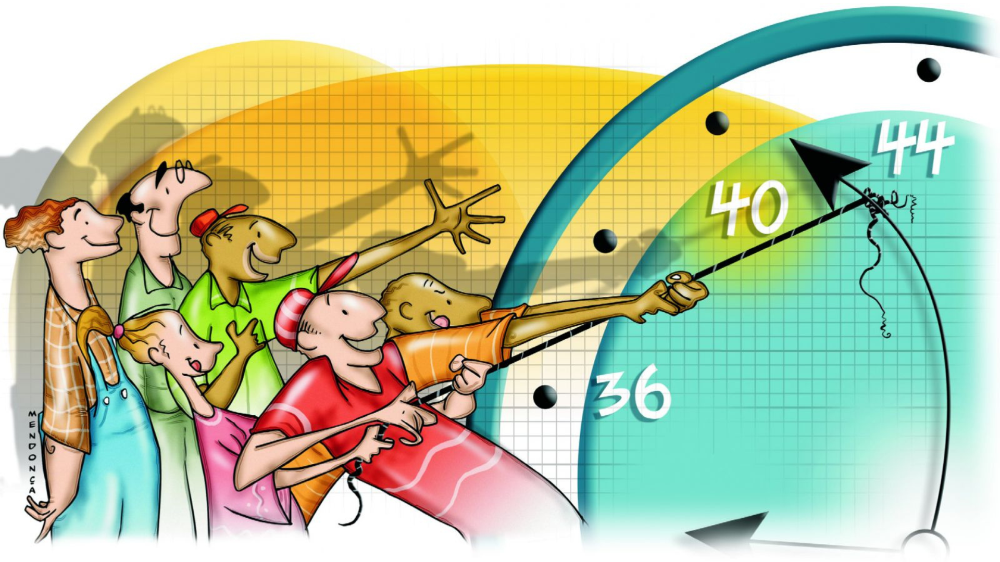

Educação digital contra a desinformação
Este site ajuda jovens a aprenderem como identificar notícias falsas e usar a internet de forma responsável.
São informações falsas ou manipuladas divulgadas como se fossem verdadeiras.
Cole um trecho da notícia abaixo e veja se ela já foi checada por sites confiáveis.

Entenda o debate sobre redução da carga horária e seus impactos econômicos.
LEIA MAISFonte: BBC Brasil
Veja como funcionam os reajustes aprovados na Câmara e o impacto no orçamento.
LEIA MAISFonte: Aos Fatos
Entenda o debate sobre o possível fim da obrigatoriedade da autoescola.
LEIA MAISFonte: Agência Lupa